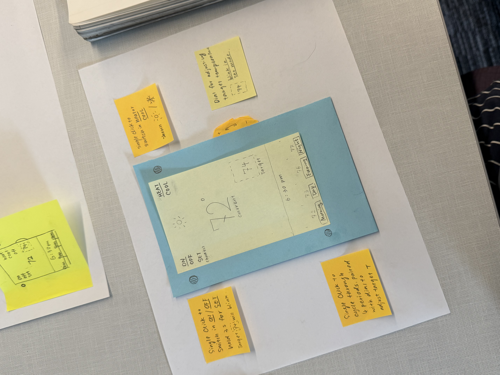
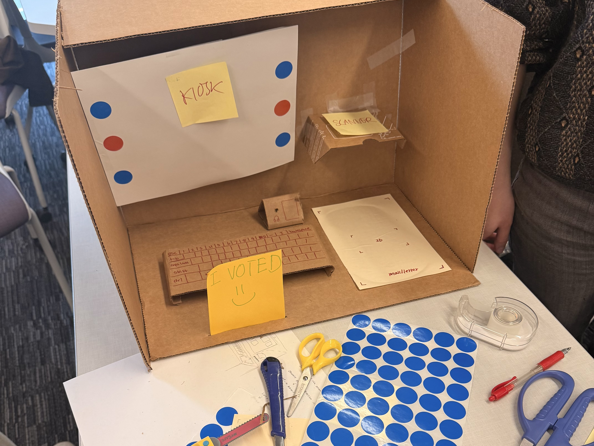

In Class Exercises
2026 Spring

Exercise 1
Paper thermostat prototype exploring mode switching, daily scheduling, and fast interaction testing through movable paper states.

Exercise 2
Low-fidelity voting machine prototype focused on accessibility, reduced steps, and class-wide testing.
Exercise 3
Placeholder summary for the third prototyping exercise.
Exercise 4
Placeholder summary for the fourth prototyping exercise.
Exercise 5
Placeholder summary for the fifth prototyping exercise.
Exercise 6
Placeholder summary for the sixth prototyping exercise.
Exercise 7
Placeholder summary for the seventh prototyping exercise.